import tensorflow as tf
from keras.models import Sequential
from keras.layers import Dense
fhat = Sequential()
fhat.add(Dense(2, input_dim=1))
fhat.add(Dense(10, activation="tanh"))
fhat.add(Dense(5, activation="tanh"))
fhat.add(Dense(1,activation="sigmoid"))10 Neural Networks
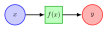
Figure 10.1 illustrates the simplest neural network that consists of an input node \(x\in\mathcal{R}\), a processing node \(f(x)\), and an output node \(y\in\mathcal{R}\). It is essentially a graphical representation of a function \(y:= f(x)\). The function could take arbitrary number of inputs e.g. \(y:= f(x_1, \cdots, x_n )\). Sometimes, the functions are parameterized, for example an affine network with scalar input and output can be defined as \(f(x,\boldsymbol{\rho}):= ax+b\), with parameter \(\boldsymbol{\rho} := \begin{bmatrix} a & b \end{bmatrix}^T\). A more complex neural network is shown in Figure 10.2.
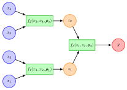
In general, we will define a scalar function with inputs \(x_1,\cdots,x_n\) and parameters \(\rho_1, \cdots, \rho_p\) as
\[ y:= f(\boldsymbol{x}, \boldsymbol{\rho}), \]
where \[ \boldsymbol{x} = \begin{bmatrix} x_1 \\ \vdots \\ x_n \end{bmatrix}, \text{ and } \boldsymbol{\rho}= \begin{bmatrix} \rho_1 \\ \vdots \\ \rho_p \end{bmatrix}. \]
Table 10.1 below shows some common functions used in the construction of ANNs, which are also plotted in ?fig-activFcn.
| Name | Function | Comments |
|---|---|---|
| Affine Function | \(f(\boldsymbol{x},\boldsymbol{\rho}):=\boldsymbol{w}^T\boldsymbol{x}+b, \boldsymbol{\rho}:=\begin{bmatrix}\boldsymbol{w}\\ b\end{bmatrix}\) | Defines a linear network. |
| Sigmoid Function | \(\frac{1}{1+e^{-x}}\) | Equal to \(1\) for \(x\to \infty\) and equal to \(0\) for \(x\to -\infty\) |
| Hyperbolic Tangent Function | \(\tanh(x)\) | Equal to \(1\) for \(x\to \infty\) and equal to \(1\) for \(x\to -\infty\) |
| Rectified Linear Unit (ReLU) | \(f(x) = x^+ = \max(0,x)\) | Clips negative values |
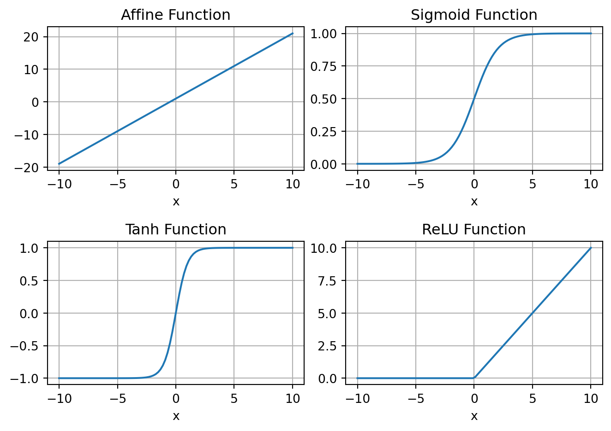
It is possible to use the simple setup, as shown in Figure 10.1, to construct a complex network as shown in Figure 10.2. The nodes \(z_1\) and \(z_2\) represent nodes that hold intermediate values. The output function is then given by \[ y = f_3\left(f_1(x_1,x_2,\boldsymbol{\rho}_1), f_2(x_3,x_4,\boldsymbol{\rho}_2), \boldsymbol{\rho}_3\right), \] a nonlinear function in \(x_1\), \(x_2\), \(x_3\), and \(x_4\); with parameters \(\boldsymbol{\rho}_1\), \(\boldsymbol{\rho}_2\), and \(\boldsymbol{\rho}_3\). With \[ \boldsymbol{x} := \begin{pmatrix}x_1 \\ x_2 \\ x_3 \\ x_4 \end{pmatrix}, \text{ and } \boldsymbol{\rho} \in \mathcal{R}^{p_1+p_2+p_3}:= \begin{pmatrix}\boldsymbol{\rho}_1 \\ \boldsymbol{\rho}_2 \\ \boldsymbol{\rho}_3 \end{pmatrix}, \] we can represent this parameterized nonlinear function as \[y = f(\boldsymbol{x},\boldsymbol{\rho}).\]
Therefore, the neural network can be thought of as a graphical architecture for defining parameterized nonlinear functions by composing simpler parameterized functions, such as those shown in Table 10.1. This network representation is motivated by the neural network in the brain where millions of simple processing nodes, such as the functions in Table 10.1, are densely interconnected. In the ANN parlance, these functions are called activation functions, since their inputs only affect the outputs when they are above a threshold.
Using TensorFlow, we can easily create such a function as shown next
In this code, the parameters are randomly initialized. We can plot this function like a regular function.
import numpy as np
x = np.linspace(-10,10,100)
y = fhat(x)
plt.plot(x,y);
plt.xlabel('x')
plt.title('Plot of a NN function, with randomly initialized parameters.');
plt.grid('on')
plt.tight_layout()We can compute gradient of the function with respect to \(x\) and \(\boldsymbol{\rho}\) using the automatic differentiation capability in TensorFlow. Both function and its derivative is shown in Figure 10.4.
x = tf.linspace(-10,10,100)
# Evaluate the function with Reverse AD enabled.
with tf.GradientTape() as tape:
tape.watch(x) # gradient w.r.t to this variable
y = fhat(x) # evaluate the function
dydx = tape.gradient(y,x) # compute the gradient
plt.plot(x,y,label='fhat(x)');
plt.plot(x,dydx,label='grad fhat(x)');
plt.xlabel('x')
plt.title('Plot of a NN function and its gradient, with randomly initialized parameters.');
plt.grid('on')
plt.legend()
plt.tight_layout()
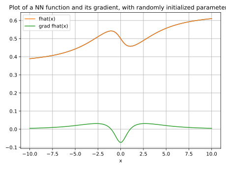
10.1 Universal Approximation Theory
Universal Approximation Theory is a foundational concept in the field of neural networks, particularly relevant to artificial intelligence and machine learning. It addresses the capability of neural networks, especially feedforward neural networks with a single hidden layer, to approximate any continuous function to a desired degree of accuracy, given sufficient neurons in the hidden layer.
The theory asserts that a neural network can represent a wide variety of interesting functions when given appropriate parameters (weights and biases), regardless of the specific details of the function. This property does not guarantee that the network will learn the function; instead, it assures that the network architecture is theoretically capable of representing the function.
Key points of the Universal Approximation Theory include:
Function Approximation Capability: It specifically applies to continuous functions on compact subsets of \(\mathbb{R}^n\). The theory tells us that for any continuous function, there exists a neural network that can approximate the function as closely as desired. The approximation is not limited by the complexity or the shape of the function.
Architecture Requirements: The original form of the theory emphasized networks with only one hidden layer. However, subsequent research has shown that deeper networks can achieve the same approximation with potentially fewer neurons, albeit the training might become more complex.
Activation Function: The choice of activation function in the neurons is crucial. The theory typically assumes non-linear activation functions, such as sigmoid, tanh, or ReLU (Rectified Linear Unit), which enable the network to capture non-linearities in the data.
Implications for Deep Learning: This theory underpins the success of deep learning, providing a theoretical justification for the use of neural networks in a wide range of applications, from speech recognition to image processing. It explains why deep learning models, with their capacity to approximate complex functions, have become a powerful tool in artificial intelligence.
Limitations: While the theory assures us of the neural network’s potential as a universal approximator, it does not provide guidance on how to train the network, ensure convergence, or select the appropriate architecture for a specific problem. It also does not address issues like overfitting, where the model learns the training data too closely and performs poorly on unseen data.
In summary, the Universal Approximation Theory highlights the theoretical capabilities of neural networks to approximate any continuous function, reinforcing their versatility and potential in modeling complex patterns and behaviors across various domains. However, practical challenges in training, architecture design, and generalization remain important considerations for leveraging neural networks effectively.
10.2 Impact of Weights and Biases
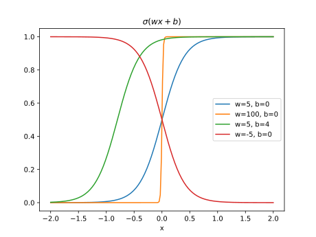
Figure 10.5 shows the effect of the weight \(w\) and the bias \(b\) on the shape of \(\sigma(wx+b)\). The weight \(w\) plays a crucial role in determining the rate at which the function changes around the activation point. For instance, a large weight coupled with zero bias leads to the emergence of a step-like function, illustrated in orange. The interplay between the weight \(w\) and the bias \(b\) is important in setting the activation point’s location. This is evident in the case where a shifted sigmoid function is observed with \(w=5\) and \(b=4\), depicted in green. In scenarios where the weight takes on a negative value, the expression \(\sigma(wx+b)\) serves as a deactivation function, transitioning from one to zero, as also highlighted in the figure, with the transition shown in red. Consequently, it’s clear that the parameters \(w\) and \(b\) have a significant impact on the shape of \(\sigma(wx+b)\). Additionally, it’s feasible to linearly blend sigmoid and affine functions to create different locally supported functions, as shown next.
def sigmoid(x,w,b):
y = w*x+b
return 1/(1+np.exp(-y))
w = 2
b = 3
y1 = sigmoid(x,w,b)
y2 = sigmoid(x,-w,b)
plt.subplot(1,3,1); plt.plot(x,y1); plt.title(f'$y_1 = \sigma({w}x+{b})$')
plt.subplot(1,3,2); plt.plot(x,y2); plt.title(f'$y_2 = \sigma(-{w}x+{b})$')
plt.subplot(1,3,3); plt.plot(x,y1+y2-1); plt.title('$y_1+y_2-1$')
plt.tight_layout()
plt.show()
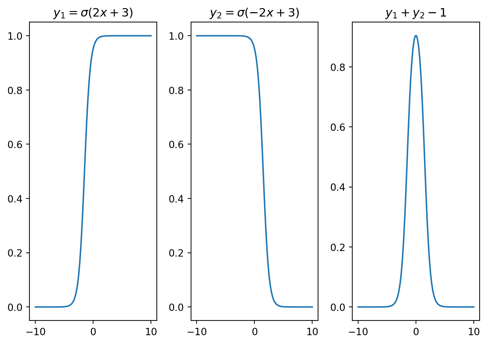
w = 50;
b = 200
y1 = sigmoid(x,w,b)
y2 = sigmoid(x,-w,b)
plt.subplot(1,3,1); plt.plot(x,y1); plt.title(f'$y_1 = \sigma({w}x+{b})$')
plt.subplot(1,3,2); plt.plot(x,y2); plt.title(f'$y_2 = \sigma(-{w}x+{b})$')
plt.subplot(1,3,3); plt.plot(x,y1+y2-1); plt.title('$y_1+y_2-1$')
plt.tight_layout()
plt.show()
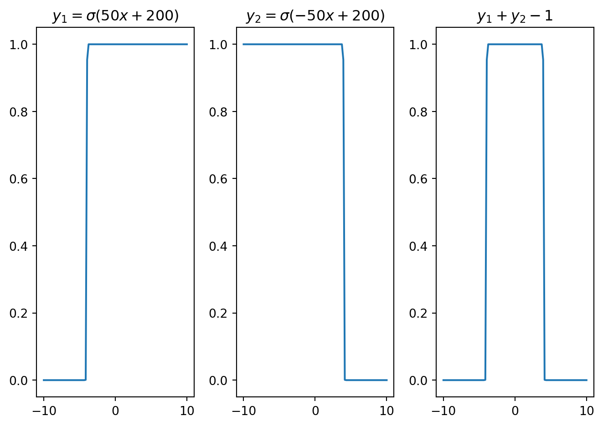
x = np.linspace(-12,22,200)
w1 = 10; b1 = 50
w2 = 0.5; b2 = 5
y1 = sigmoid(x,w1,b1)
y2 = sigmoid(x,-w2,b2)
plt.subplot(1,3,1); plt.plot(x,y1); plt.title(f'$y_1 = \sigma({w1}x+{b1})$')
plt.subplot(1,3,2); plt.plot(x,y2); plt.title(f'$y_2 = \sigma(-{w2}x+{b2})$')
plt.subplot(1,3,3); plt.plot(x,y1+y2-1); plt.title('$y_1+y_2-1$')
plt.tight_layout()
plt.show()
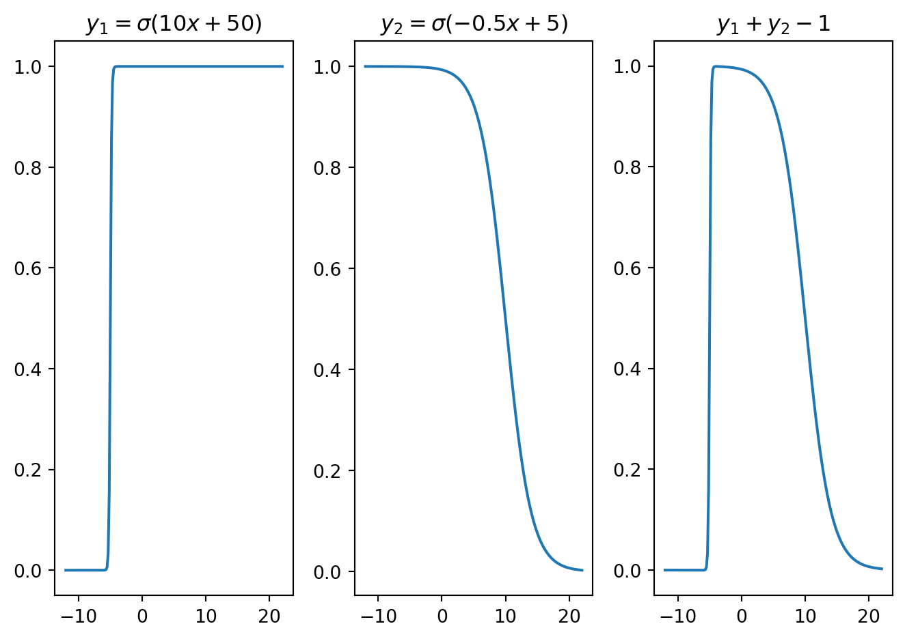
Figure 10.6 demonstrates how a bell-shaped function can be constructed by superimposing sigmoid functions over affine functions. Similarly, Figure 10.7 presents a square wave, while Figure 10.8 showcases an asymmetric function. These varied functions emerge from adjusting the weights and biases within the affine functions inside each sigmoid. By optimizing these weights and biases, it is possible to modify the characteristics of these locally supported functions. Such local functions can be referred to as neural basis functions.
10.3 Deep Neural Network
Deep neural networks (DNNs) are a subset of machine learning algorithms characterized by their multi-layered structure, which mimics the human brain’s neural architecture. These networks comprise interconnected nodes, or neurons, distributed across several layers, allowing them to learn complex patterns in data. DNNs are particularly effective for tasks that involve high-dimensional data, such as image and speech recognition, as well as natural language processing. The layered architecture enables the extraction of hierarchical features, with each layer building on the previous one to refine the network’s understanding. This capacity for feature extraction and pattern recognition has established deep neural networks as a fundamental component in the field of artificial intelligence, contributing to significant advancements across various applications and research areas.
Deep neural networks (DNNs) encompass various architectures, each tailored for specific data types and tasks. Key architectures are summarized next.
10.3.1 Feed Forward Neural Network (FFNN)
Also known as fully connected networks, FFNNs consist of layers where each neuron in one layer connects to every neuron in the subsequent layer. Such networks are suitable for tabular data and classification tasks.
Mathematically, a function approximated by an MLP can be expressed as \[ \boldsymbol{F}(\boldsymbol{x}) = \boldsymbol{F}_N(\boldsymbol{F}_{N-1}(...\boldsymbol{F}_1(\boldsymbol{x}))) = (\boldsymbol{F}_N \circ \boldsymbol{F}_{N-1} \circ \cdots \circ \boldsymbol{F}_1)(\boldsymbol{x}), \] where \((\boldsymbol{F}_i\circ \boldsymbol{F}_j)(\boldsymbol{x})\) denotes function composition and equivalent to \(\boldsymbol{F}_i(\boldsymbol{F}_j(\boldsymbol{x}))\). Each function representes a `layer’ in the deep network, i.e., \(\boldsymbol{F}_i(\boldsymbol{F}_{i-1}(\cdot)) := \boldsymbol{f}_i(\boldsymbol{W}_i \boldsymbol{F}_{i-1}(\cdot) + \boldsymbol{b}_i)\), where \(\boldsymbol{W}_i\), \(\boldsymbol{b}_i\) and \(\boldsymbol{f}_i(\cdot)\) are the weight, bias, and activation function associated with the \(i^\text{th}\) layer.
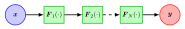
Notably, the full connectivity of FFNNs makes them prone to overfitting, which is commonly avoided by localizing the influence with regularization techniques such as weight decay or trimming connectivity. We often classify the architecture with multiple layers as a multi-layered feed-forward neural network. FFNNs are less complex and are easy to design and maintain. However, evaluating large networks can be computationally demanding. Also, they have numerical issues related to vanishing and exploding gradients during the optimization of network parameters.
Example: Approximation of a Function with FFNNs
The following Python code demostrates how a nonlinear function can be approximated using FFNNs with TensorFlow.
import tensorflow as tf
import numpy as np
import matplotlib.pyplot as plt
# Define the function
def target_function(x):
return np.exp(-(x - 2)**2) + np.exp(-0.15*(x + 2)**4)
# Generate training data
x_train = np.linspace(-5, 5, 100).reshape(-1, 1)
y_train = target_function(x_train)
# Build a simple neural network model
model = tf.keras.Sequential([
tf.keras.layers.Dense(32, activation='tanh', input_shape=(1,)),
tf.keras.layers.Dense(32, activation='tanh'),
tf.keras.layers.Dense(32, activation='tanh'),
tf.keras.layers.Dense(1)
])
# Compile the model
model.compile(optimizer='adam', loss='mse')
# Train the model
model.fit(x_train, y_train, epochs=1000)
# Predict using the trained model
x_test = np.linspace(-5, 5, 1000).reshape(-1, 1)
y_pred = model.predict(x_test)
plt.figure(figsize=(10, 6))
plt.plot(x_train, y_train, 'r', label='Target Function')
plt.plot(x_test, y_pred, 'b', label='Approximation')
plt.legend()
plt.xlabel('x')
plt.ylabel('y')
plt.title('Approximation of the target function using a neural network')
plt
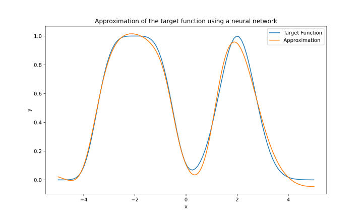
10.3.2 Recurrent Neural Networks (RNNs)
RNNs are designed for sequential data, such as time series or natural language. They have looping connections, allowing them to maintain a memory of previous inputs and capture temporal dependencies as shown in Figure 10.11.
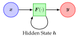
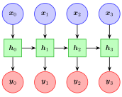
RNNs can model the sequential nature of time series data by processing one time step at a time and maintaining a hidden state that encapsulates information from previous time steps. This allows RNNs to capture temporal patterns and dependencies in the data.
Mathematically, we can express RNNs as \[ \boldsymbol{h}_t = \boldsymbol{F}(\boldsymbol{W}_{xh}\boldsymbol{x}_t + \boldsymbol{W}_{hh}\boldsymbol{h}_{t-1} + \boldsymbol{b}_h),\; \boldsymbol{y}_t = \boldsymbol{g}(\boldsymbol{W}_{hy}\boldsymbol{h}_t + \boldsymbol{b}_y), \]
where \(\boldsymbol{W}_{xh}\), \(\boldsymbol{W}_{hh}\), \(\boldsymbol{W}_{hy}\), \(\boldsymbol{b}_{h}\), and \(\boldsymbol{b}_{y}\) are model parameters that will be determined from the optimization.
Example: Classification with RNN
RNNs can also be used for classification tasks in time series analysis, such as classifying time series data into different categories based on their temporal patterns.
Step1: Import Libraries
import numpy as np
import matplotlib.pyplot as plt
from tensorflow.keras.models import Sequential
from tensorflow.keras.layers import SimpleRNN, Dense
from tensorflow.keras.optimizers import AdamStep2: Generate Synthetic Sine Wave Dataset
def generate_sine_wave_data(num_samples, num_points,
freq_range=(1, 5), phase_range=(0, np.pi)):
X = np.zeros((num_samples, num_points))
y = np.zeros((num_samples, 1))
for i in range(num_samples):
freq = np.random.uniform(*freq_range)
phase = np.random.uniform(*phase_range)
t = np.linspace(0, 1, num_points)
X[i, :] = np.sin(2 * np.pi * freq * t + phase)
y[i] = freq
return X.reshape((num_samples, num_points, 1)), y
num_samples = 1000
num_points = 50
X, y = generate_sine_wave_data(num_samples, num_points)Step3: Build the RNN Model
model = Sequential([
SimpleRNN(num_points, input_shape=(num_points, 1),
return_sequences=True),
SimpleRNN(num_points),
Dense(1)
])Step 4: Train the Model
model.compile(optimizer='adam', loss='mse')
model.fit(X, y, epochs=10, batch_size=32, validation_split=0.2)Step 5: Evaluate the Model
# Generate test data
X_test, y_test = generate_sine_wave_data(100, num_points)
y_pred = model.predict(X_test)
# Visualize one example
plt.figure(figsize=(10, 4))
plt.plot(X_test[0, :, 0], label='Input Sine Wave')
plt.title(f'Actual Frequency: {y_test[0][0]:.2f} Hz,
Predicted Frequency: {y_pred[0][0]:.2f} Hz')
plt.legend()
plt.show()
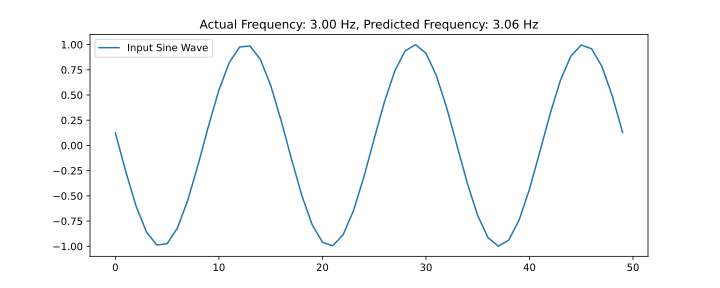
Figure 10.12 presents the classification results, where we predicted the frequency of a sinusoidal function from data. While this task could have been achieved using Fast Fourier Transform (FFT), RNNs are capable of predicting sequences of frequencies in time series data, which FFT cannot accomplish. FFT can only determine the frequencies present in a time series but not the order in which they occur.
A practical example where the sequence of frequencies is important is in speech analysis. Speech signals contain sequences of frequencies and their variations over time, which are essential for recognizing words and phrases. Traditional methods like FFT might not effectively capture these temporal dynamics. In contrast, RNNs can model the sequential nature of the data, making them more suitable for such tasks.
An aerospace engineering application is explored next under LSTM.
10.3.3 Long Short-Term Memory (LSTM) Networks
Long Short-Term Memory (LSTM) networks are a type of Recurrent Neural Network (RNN) designed to address the limitations of traditional RNNs, particularly in handling long-term dependencies. While RNNs can theoretically capture temporal sequences, they often struggle with vanishing and exploding gradients when dealing with long sequences, leading to poor performance. LSTMs overcome this issue with their unique architecture as shown in Figure 10.13, which includes memory cells and gates (input, output, and forget gates) that regulate the flow of information.
The main components and workings of an LSTM are:
Memory Cell: The memory cell is the core of the LSTM unit. It stores the long-term information and has the ability to maintain its state over time.
Gates: LSTMs have three types of gates that control the flow of information in and out of the memory cell. These gates are composed of sigmoid neural net layers and pointwise multiplication operations.
- Input Gate: This gate decides how much of the new information to store in the memory cell. It takes the current input and the previous hidden state as inputs and outputs a value between 0 and 1 for each number in the cell state. A value of 1 means “let all information through,” while 0 means “block all information.”
- Forget Gate: This gate determines how much of the existing information in the memory cell should be kept or forgotten. It also takes the current input and the previous hidden state as inputs and outputs a value between 0 and 1 for each number in the cell state. A value of 1 means “keep all information,” while 0 means “forget all information.”
- Output Gate: This gate decides how much of the information in the memory cell should be used to compute the current output. It uses the current input, the previous hidden state, and the updated cell state to produce an output.
Updating the Cell State: The cell state is updated based on the outputs of the input and forget gates. The forget gate’s output determines which parts of the existing cell state should be kept, and the input gate’s output determines which parts of the new information should be added to the cell state.
Computing the Output: The output of the LSTM unit is computed based on the updated cell state and the output gate. The cell state is passed through a tanh function to ensure the values are between -1 and 1, and then it is multiplied by the output gate’s output to determine which parts of the cell state should be output.
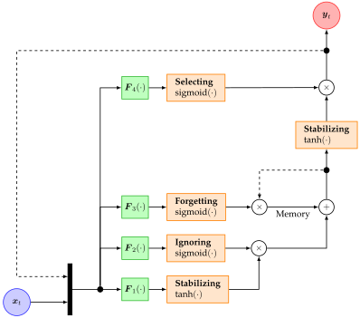
With reference to Figure 10.13, the input gate involves mapping the previous output \(\boldsymbol{y}_{t-1}\) and the current input \(\boldsymbol{x}_t\) to the current output through the feed-forward neural network \(F_1(\cdot)\), which is then constrained within the range \([-1,1]\) by the \(\tanh(\cdot)\) function to ensure the feedback loop’s stability. A portion of this output is disregarded by multiplying it with the Ignoring sigmoid function, controlled by a second feed-forward neural network \(\boldsymbol{F}_2(\cdot)\). The updated output is then combined with a selectively retained memory, facilitated by a third feed-forward neural network \(\boldsymbol{F}_3(\cdot)\) and regulated by the Forgetting sigmoid function. The aggregate of these signals is once again modulated by a \(\tanh(\cdot)\) function for stability. This new output is further regulated by the Selecting sigmoid, driven by a fourth feed-forward neural network \(\boldsymbol{F}_4(\cdot)\). The resulting signal becomes the current output \(\boldsymbol{y}_t\), which is also recirculated for the prediction at the next time step.
This architecture allows LSTMs to retain information over extended periods, making them more effective in learning from long sequences. As a result, LSTMs are better suited for tasks that require understanding context over long time spans, such as language modeling, speech recognition, and time series forecasting. They can capture patterns that span several time steps, which traditional RNNs might overlook. This capability makes LSTMs a preferred choice in many applications where long-term dependencies are critical for accurate predictions.
10.3.4 Autoencoders
Autoencoders are used for unsupervised learning tasks like dimensionality reduction. They consist of an encoder that compresses the input into a latent space representation and a decoder that reconstructs the input.
10.3.5 Convolutional Neural Networks (CNNs)
Designed for grid-like data such as images, CNNs use convolutional layers to extract spatial features and reduce parameters through weight sharing. They are commonly used in image recognition and classification.
10.3.6 Generative Adversarial Networks (GANs)
GANs comprise two networks, a generator and a discriminator, trained simultaneously. The generator creates fake data samples, while the discriminator distinguishes between real and fake samples. GANs are used for image generation and style transfer.
10.3.7 Transformer Networks
Transformers, popular in natural language processing, handle long-range dependencies and parallelize computation through self-attention mechanisms.